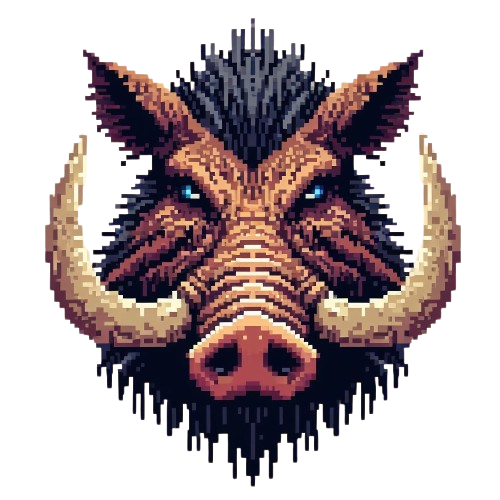
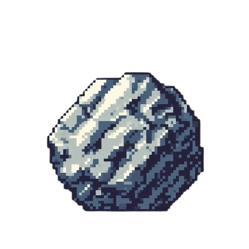
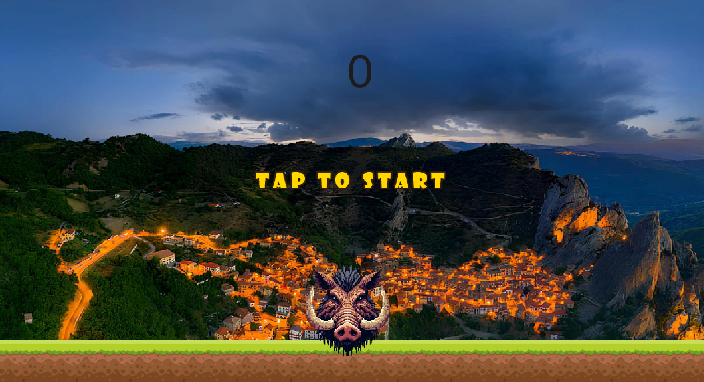

Overview:
"Basilicata Dodge" is a 2D game made with Unity. The player controls a wild boar and must dodge rocks falling from above. The game has colorful graphics and a background soundtrack that creates an engaging atmosphere. The player's score increases with every successfully dodged rock, and the game becomes harder as the rocks fall faster.
Gameplay:
🔹 The player controls the wild boar using the mouse or the keyboard arrow keys.
🔹 The wild boar can move left and right to avoid the rocks falling from the top.
🔹 The rocks fall at different speeds and in random positions on the screen.
🔹 The player gets points every time they successfully dodge a rock.
🔹 The game ends when a rock hits the wild boar. Then, the final score is displayed.
Game Goals:
🔹 Dodge as many rocks as possible to get the highest score.
🔹 Challenge yourself and your friends to see who can get the highest score.
Controls:
🔹 Use the mouse to move the wild boar left or right.
🔹 Use the keyboard arrow keys (left and right) to move the wild boar.
Artwork:
🔹 Playable Character: A pixel art wild boar. It is brown with black fur and visible tusks. Its eyes are a bright light-blue color, showing intensity and determination.
🔹 Rocks: Heavy rocks falling from above.


